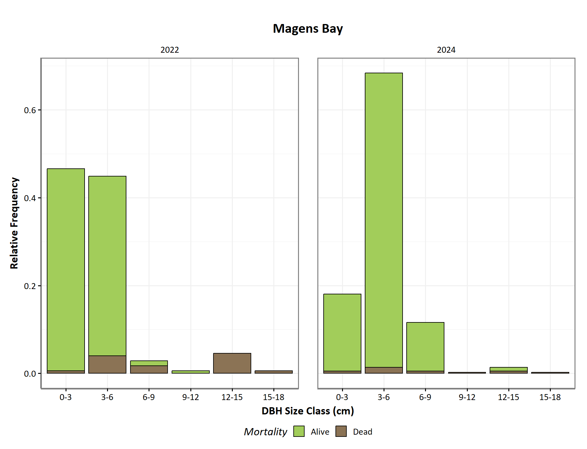
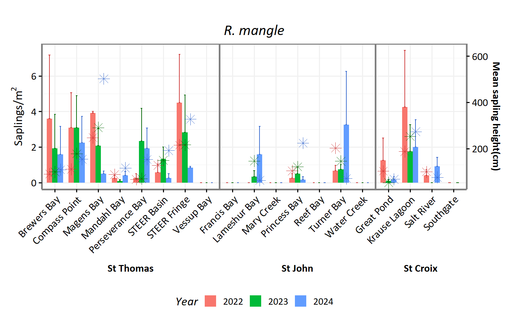
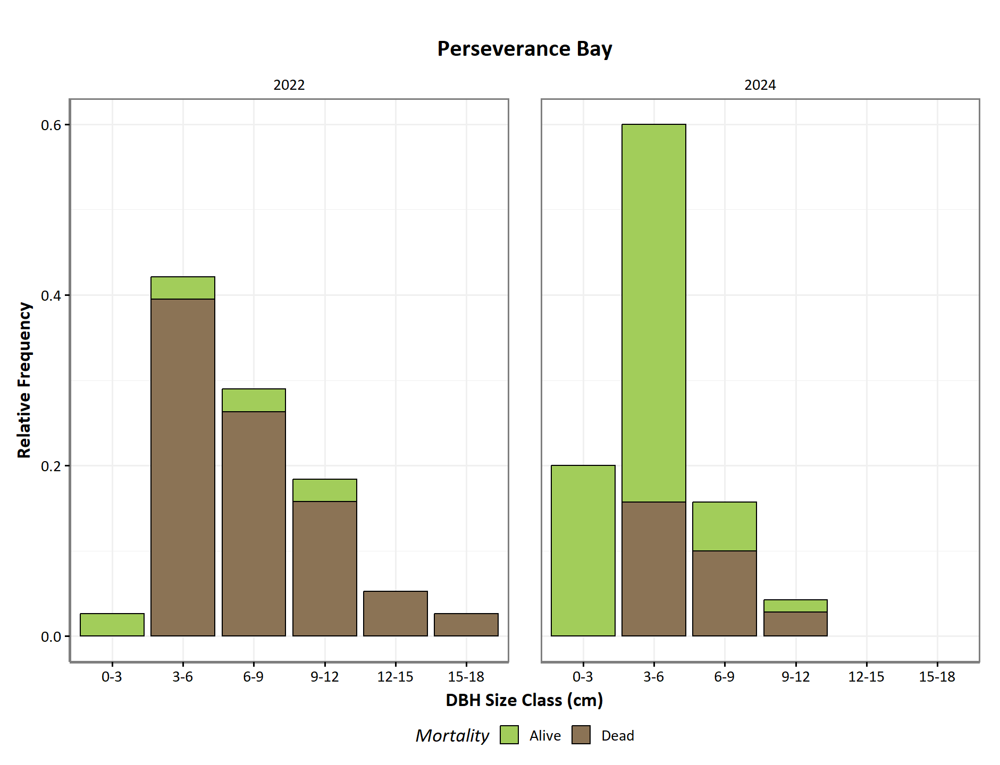

General Site Map

| Alive | Dead | Open | ||
|---|---|---|---|---|
| Brewers Bay | ||||
| 2022 | 64.3 ± 5.4 | 23.8 ± 3.1 | 11.9 ± 2.3 | |
| 2024 | 83.8 ± 6.7 | 11.5 ± 6 | 4.7 ± 2.1 | |
| Compass Point | ||||
| 2022 | 34.8 ± 20.8 | 10.7 ± 4.9 | 54.6 ± 18.3 | |
| 2024 | 63.6 ± 17.1 | 6.3 ± 1.2 | 30.1 ± 15.9 | |
| Francis Bay | ||||
| 2022 | 27.8 ± 26 | 9.3 ± 4.2 | 62.9 ± 30.1 | |
| 2024 | 32.6 ± 30.1 | 0.8 ± 0.4 | 66.6 ± 30.5 | |
| Great Pond | ||||
| 2022 | 0.3 ± 0.3 | 2.9 ± 1.4 | 96.9 ± 1.6 | |
| 2024 | 0 ± 0 | 0 ± 0 | 100 ± 0 | |
| Krause Lagoon | ||||
| 2022 | 65.7 ± 23.9 | 11.3 ± 2.8 | 23 ± 21.7 | |
| 2024 | 84.1 ± 1.9 | 9.9 ± 1.5 | 6.1 ± 0.8 | |
| Lameshur Bay | ||||
| 2022 | 27.5 ± 7.5 | 4 ± 2.7 | 68.5 ± 10 | |
| 2024 | 47.6 ± 6 | 0 ± 0 | 52.4 ± 6 | |
| Magens Bay | ||||
| 2022 | 84.3 ± 7 | 11.3 ± 9.2 | 4.4 ± 2.8 | |
| 2024 | 96.4 ± 1.8 | 2.3 ± 1.2 | 1.4 ± 1 | |
| Mandahl Bay | ||||
| 2022 | 79.4 ± 11.4 | 7.3 ± 1.6 | 13.3 ± 9.8 | |
| 2024 | 75.3 ± 2.2 | 12.3 ± 1.1 | 12.4 ± 1.9 | |
| Mary Creek | ||||
| 2022 | 20.7 ± 20.7 | 7.6 ± 2.7 | 71.7 ± 21.7 | |
| 2024 | 24.1 ± 23.7 | 5.1 ± 2.7 | 70.8 ± 25.9 | |
| Perseverance Bay | ||||
| 2022 | 5.5 ± 2.8 | 8.5 ± 3 | 86 ± 1.8 | |
| 2024 | 23.6 ± 9.5 | 1.7 ± 1.6 | 74.7 ± 7.9 | |
| Princess Bay | ||||
| 2022 | 12.6 ± 6.4 | 11 ± 2.9 | 76.4 ± 7.2 | |
| 2024 | 45.1 ± 25.2 | 2.2 ± 2.2 | 52.8 ± 24 | |
| Reef Bay | ||||
| 2022 | 55.1 ± 28.9 | 3.3 ± 3.3 | 41.6 ± 29.8 | |
| 2024 | 54.9 ± 27.5 | 4.1 ± 2 | 41 ± 29.5 | |
| STEER Basin | ||||
| 2022 | 11.1 ± 11.1 | 2.9 ± 1.1 | 86 ± 10 | |
| 2024 | 38.1 ± 30.1 | 8.1 ± 6 | 53.8 ± 27.3 | |
| STEER Fringe | ||||
| 2022 | 48.3 ± 22.7 | 4.6 ± 1.3 | 47.1 ± 22.9 | |
| 2024 | 73.1 ± 1.6 | 8.7 ± 3.8 | 18.3 ± 2.3 | |
| Salt River | ||||
| 2022 | 72.3 ± 3.8 | 16.8 ± 5 | 10.9 ± 8.2 | |
| 2024 | 85.8 ± 3.7 | 13.8 ± 3.5 | 0.4 ± 0.3 | |
| Southgate | ||||
| 2022 | 65.3 ± 20.1 | 8.1 ± 4.5 | 26.6 ± 22 | |
| 2024 | 66.4 ± 27.3 | 2.9 ± 2.1 | 30.7 ± 28.7 | |
| Turner Bay | ||||
| 2022 | 91.3 ± 3.1 | 7.8 ± 3.9 | 0.9 ± 0.8 | |
| 2024 | 92 ± 6.5 | 7.8 ± 6.5 | 0.2 ± 0 | |
| Vessup Bay | ||||
| 2022 | 2.4 ± 1.4 | 14.7 ± 2.5 | 82.8 ± 3.1 | |
| 2024 | 5.9 ± 3.1 | 7.7 ± 5.5 | 86.4 ± 8.4 | |
| Water Creek | ||||
| 2022 | 83.5 ± 4.6 | 4 ± 3 | 12.5 ± 6.2 | |
| 2024 | 86.6 ± 4.4 | 4.9 ± 1.4 | 8.6 ± 3.4 | |
| Height (m) |
Basal area (m²/ha) |
Density (stems/ha) |
Relative Distribution of Species (Alive)
|
Relative Distribution of Species (Dead)
|
|||||
|---|---|---|---|---|---|---|---|---|---|
| R. mangle (%) |
A. germinians (%) |
L. racemosa (%) |
R. mangle (%) |
A. germinians (%) |
L. racemosa (%) |
||||
| Brewers Bay | |||||||||
| 2022 | 6.4 ± 0.6 | 22.6 ± 5.1 | 10700 ± 2572 | 17.3 | 0 | 82.7 | 12.8 | 0 | 87.2 |
| 2024 | 7.3 ± 0.7 | 30.3 ± 3.7 | 11200 ± 2138 | 16.7 | 0 | 83.3 | 8.8 | 0 | 91.2 |
| Compass Point | |||||||||
| 2022 | 5 ± 1.2 | 5.9 ± 4.4 | 1933 ± 895 | 95.9 | 2 | 2.1 | 40.8 | 16.8 | 42.4 |
| 2024 | 4.2 ± 0.9 | 10.4 ± 7.2 | 3967 ± 1299 | 94.9 | 3.2 | 1.9 | 15.3 | 12.2 | 72.5 |
| Francis Bay | |||||||||
| 2022 | 3.2 ± 0.2 | 10.7 ± 7.8 | 6350 ± 5050 | 0 | 0 | 100 | 0 | 0 | 100 |
| 2024 | 3.6 ± 0.6 | 6.6 ± 4.4 | 3400 ± 2623 | 0 | 0 | 100 | 0 | 0 | 100 |
| Krause Lagoon | |||||||||
| 2022 | 3.9 ± 0.1 | 6.9 ± 2.6 | 4200 ± 1400 | 100 | 0 | 0 | 100 | 0 | 0 |
| 2024 | 4.6 ± 0.6 | 10.2 ± 1.6 | 7133 ± 2990 | 100 | 0 | 0 | 100 | 0 | 0 |
| Lameshur Bay | |||||||||
| 2022 | 4.3 ± 0.4 | 3.6 ± 0.2 | 2733 ± 176 | 10.3 | 89.7 | 0 | 0 | 100 | 0 |
| 2024 | 3.4 ± 0 | 2.9 ± 1 | 2133 ± 684 | 31.8 | 68.2 | 0 | 0 | 61.6 | 38.4 |
| Magens Bay | |||||||||
| 2022 | 3.6 ± 0.3 | 4.3 ± 1.5 | 5000 ± 1868 | 96.2 | 0 | 3.8 | 100 | 0 | 0 |
| 2024 | 6.1 ± 0.2 | 17.5 ± 1.7 | 11267 ± 649 | 97.9 | 0 | 2.1 | 51.9 | 0 | 48.1 |
| Mandahl Bay | |||||||||
| 2022 | 5.1 ± 0.2 | 22.4 ± 1.1 | 5700 ± 624 | 1.5 | 0 | 98.5 | 4.1 | 0 | 95.9 |
| 2024 | 6.1 ± 0.2 | 27.7 ± 1.7 | 8933 ± 1272 | 1.6 | 0 | 98.4 | 4.3 | 0 | 95.7 |
| Mary Creek | |||||||||
| 2022 | 3.1 ± 0.5 | 2.6 ± 1.9 | 1000 ± 802 | 4.8 | 15.1 | 80.1 | 51.8 | 2.7 | 45.5 |
| 2024 | 2.4 ± 0.5 | 3.7 ± 2 | 1700 ± 907 | 6.5 | 17.3 | 76.2 | 32.7 | 4.8 | 62.5 |
| Perseverance Bay | |||||||||
| 2022 | 5.7 ± 0.6 | 0.6 ± 0.2 | 200 ± 100 | 100 | 0 | 0 | 50.3 | 0 | 49.7 |
| 2024 | 3.3 ± 0.6 | 2.3 ± 0.9 | 1667 ± 463 | 83.6 | 0 | 16.4 | 35 | 0 | 65 |
| Princess Bay | |||||||||
| 2022 | 5 ± 1.2 | 1.7 ± 0.9 | 567 ± 176 | 100 | 0 | 0 | 99.6 | 0 | 0.4 |
| 2024 | 3 ± 0.1 | 2.8 ± 0.7 | 1333 ± 318 | 97.9 | 0 | 2.1 | 99.8 | 0 | 0.2 |
| Reef Bay | |||||||||
| 2022 | 3.8 ± 0.7 | 12.9 ± 6 | 11767 ± 5485 | 0 | 3.6 | 96.4 | 0 | 4.3 | 95.7 |
| 2024 | 5.6 ± 0.8 | 14.5 ± 7.3 | 10700 ± 5463 | 0 | 20.6 | 79.4 | 0 | 13.4 | 86.6 |
| STEER Basin | |||||||||
| 2022 | 3.1 ± 0.3 | 2.1 ± 0 | 2100 ± NA | 0 | 100 | 0 | 87.1 | 0.6 | 12.3 |
| 2024 | 2.4 ± 0.7 | 5.4 ± 5.2 | 4100 ± 3700 | 7.3 | 76.9 | 15.8 | 38.4 | 15.8 | 45.8 |
| STEER Fringe | |||||||||
| 2022 | 3.5 ± 0.7 | 5.4 ± 2.1 | 2267 ± 623 | 45.8 | 0 | 54.2 | 87.3 | 0 | 12.7 |
| 2024 | 4.1 ± 0.8 | 10.3 ± 4.3 | 6267 ± 2406 | 64 | 0 | 36 | 83.8 | 0 | 16.2 |
| Salt River | |||||||||
| 2022 | 4.1 ± 0.2 | 11.8 ± 2.5 | 6333 ± 825 | 46.5 | 0 | 53.5 | 49.2 | 0 | 50.8 |
| 2024 | 4.3 ± 0.2 | 14.5 ± 2.9 | 7533 ± 1135 | 52.5 | 0.3 | 47.2 | 91.5 | 0 | 8.5 |
| Southgate | |||||||||
| 2022 | 4.7 ± 1 | 9.3 ± 5.2 | 5300 ± 1442 | 0 | 11 | 89 | 0 | 18.4 | 81.6 |
| 2024 | 3.8 ± 0.6 | 12.8 ± 5.8 | 7033 ± 2122 | 0 | 12.9 | 87.1 | 0 | 12.9 | 87.1 |
| Turner Bay | |||||||||
| 2022 | 5.3 ± 0.6 | 23.1 ± 2.1 | 11300 ± 710 | 72.9 | 0 | 27.1 | 54.6 | 0 | 45.4 |
| 2024 | 6.5 ± 0.4 | 29.7 ± 2.2 | 11833 ± 1384 | 71.8 | 0 | 28.2 | 46.3 | 0 | 53.7 |
| Vessup Bay | |||||||||
| 2022 | 4.1 ± 0.3 | 0.1 ± 0 | 100 ± NA | 0 | 0 | 100 | 81.1 | 0 | 18.9 |
| 2024 | 2.9 ± 0.2 | 1.6 ± 1 | 1200 ± 600 | 0 | 0 | 100 | 47.2 | 0 | 52.8 |
| Water Creek | |||||||||
| 2022 | 4.7 ± 0.4 | 6.2 ± 1.1 | 2833 ± 393 | 29.5 | 0.9 | 69.6 | 58.1 | 0 | 41.9 |
| 2024 | 4.6 ± 0.3 | 4 ± 0.8 | 2033 ± 291 | 43.2 | 1.6 | 55.1 | 78.3 | 0 | 21.7 |
| Great Pond | |||||||||
| 2022 | 2.3 ± 0.4 | NA ± NA | NA ± NA | NA | NA | NA | 45.1 | 54.9 | 0 |
| 2024 | 0 ± 0 | NA ± NA | NA ± NA | NA | NA | NA | 16.3 | 83.7 | 0 |
| NA | |||||||||
| NA | NA ± NA | NA ± NA | NA ± NA | NA | NA | NA | 0 | 100 | 0 |
Seedling Density











| R. mangle | A. germinians | L. racemosa | ||
|---|---|---|---|---|
| Brewers Bay | ||||
| 2022 | 1.8 ± 1.8 | 0 ± 0 | 49.6 ± 48.2 | |
| 2023 | 0.2 ± 0.1 | 0 ± 0 | 14.2 ± 11.5 | |
| 2024 | 0.2 ± 0.2 | 0 ± 0 | 0.4 ± 0.3 | |
| Compass Point | ||||
| 2022 | 3.2 ± 2.6 | 0.7 ± 0.5 | 0 ± 0 | |
| 2023 | 11.1 ± 7.5 | 0.5 ± 0.5 | 0.3 ± 0.2 | |
| 2024 | 6.1 ± 3.4 | 0.1 ± 0.1 | 0 ± 0 | |
| Francis Bay | ||||
| 2022 | 0.1 ± 0.1 | 0 ± 0 | 2.2 ± 1.1 | |
| 2023 | 0.1 ± 0.1 | 0 ± 0 | 0 ± 0 | |
| 2024 | 0 ± 0 | 0.1 ± 0.1 | 0 ± 0 | |
| Great Pond | ||||
| 2022 | 9.2 ± 9.3 | 0.1 ± 0.1 | 0 ± 0 | |
| 2023 | 0 ± 0 | 0 ± 0 | 0 ± 0 | |
| 2024 | 0.2 ± 0.2 | 0 ± 0 | 0 ± 0 | |
| Krause Lagoon | ||||
| 2022 | 0.9 ± 0.9 | 0 ± 0 | 0.4 ± 0.4 | |
| 2023 | 2.5 ± 2.5 | 0 ± 0 | 0 ± 0 | |
| 2024 | 0.9 ± 0.8 | 0 ± 0 | 0 ± 0 | |
| Lameshur Bay | ||||
| 2022 | 0.3 ± 0.3 | 0.2 ± 0 | 0.6 ± 0.6 | |
| 2023 | 12.8 ± 12.8 | 0.8 ± 0.4 | 0.5 ± 0.5 | |
| 2024 | 6.2 ± 6.2 | 1 ± 0.6 | 0.8 ± 0.8 | |
| Magens Bay | ||||
| 2022 | 0 ± 0 | 0 ± 0 | 0 ± 0 | |
| 2023 | 0 ± 0 | 0 ± 0 | 0 ± 0 | |
| 2024 | 0 ± 0 | 0 ± 0 | 0 ± 0 | |
| Mandahl Bay | ||||
| 2022 | 0 ± 0 | 0 ± 0 | 2.5 ± 2.3 | |
| 2023 | 0.2 ± 0.2 | 0 ± 0 | 246.1 ± 198.9 | |
| 2024 | 0.7 ± 0.3 | 0 ± 0 | 1.4 ± 1.4 | |
| Mary Creek | ||||
| 2022 | 0 ± 0 | 0 ± 0 | 0.1 ± 0.1 | |
| 2023 | 0 ± 0 | 0 ± 0 | 14.7 ± 14.7 | |
| 2024 | 0 ± 0 | 0 ± 0 | 0.3 ± 0.3 | |
| Perseverance Bay | ||||
| 2022 | 0.2 ± 0.1 | 0 ± 0 | 0 ± 0 | |
| 2023 | 0.1 ± 0.1 | 0 ± 0 | 0 ± 0 | |
| 2024 | 0 ± 0 | 0 ± 0 | 0 ± 0 | |
| Princess Bay | ||||
| 2022 | 0 ± 0 | 0 ± 0 | 0.2 ± 0.2 | |
| 2023 | 0.2 ± 0.1 | 0 ± 0 | 0.2 ± 0.1 | |
| 2024 | 0.6 ± 0.3 | 0 ± 0 | 0.3 ± 0.2 | |
| Reef Bay | ||||
| 2022 | 0 ± 0 | 0 ± 0 | 0.2 ± 0.2 | |
| 2023 | 0.4 ± 0.4 | 0 ± 0 | 0.5 ± 0.3 | |
| 2024 | 0 ± 0 | 0 ± 0 | 1.1 ± 1.1 | |
| STEER Basin | ||||
| 2022 | 0.1 ± 0.1 | 0.2 ± 0.1 | 0.3 ± 0.2 | |
| 2023 | 0.7 ± 0.3 | 0.3 ± 0.2 | 1.4 ± 1.3 | |
| 2024 | 0.6 ± 0.5 | 0.7 ± 0.3 | 2.1 ± 1 | |
| STEER Fringe | ||||
| 2022 | 0 ± 0 | 0 ± 0 | 0 ± 0 | |
| 2023 | 0.2 ± 0.2 | 0 ± 0 | 1.1 ± 1.1 | |
| 2024 | 0.2 ± 0.2 | 0.1 ± 0.1 | 3.5 ± 3.5 | |
| Salt River | ||||
| 2022 | 0.2 ± 0.2 | 0.9 ± 0.9 | 3.4 ± 3.4 | |
| 2023 | 0.1 ± 0.1 | 0 ± 0 | 11.8 ± 11.8 | |
| 2024 | 0.1 ± 0.1 | 0 ± 0 | 3.6 ± 3.6 | |
| Southgate | ||||
| 2022 | 0 ± 0 | 0.3 ± 0.2 | 0.8 ± 0.4 | |
| 2023 | 0 ± 0 | 0 ± 0 | 13.8 ± 12.4 | |
| Turner Bay | ||||
| 2022 | 3.2 ± 1.7 | 0 ± 0 | 0.6 ± 0.5 | |
| 2023 | 10.2 ± 2.9 | 0 ± 0 | 0 ± 0 | |
| 2024 | 3.8 ± 2.4 | 0 ± 0 | 0 ± 0 | |
| Vessup Bay | ||||
| 2022 | 0 ± 0 | 0 ± 0 | 0 ± 0 | |
| 2023 | 0 ± 0 | 0 ± 0 | 2.1 ± 2.1 | |
| 2024 | 0 ± 0 | 0 ± 0 | 0.1 ± 0.1 | |
| Water Creek | ||||
| 2022 | 0.2 ± 0.2 | 0 ± 0 | 5.6 ± 1.4 | |
| 2023 | 0 ± 0 | 0 ± 0 | 9.2 ± 4.8 | |
| 2024 | 0 ± 0 | 0 ± 0 | 18.8 ± 11.2 | |
| Depth (cm) |
Temperature (°C) |
Dissolved Oxygen (mg/L) |
Salinity (ppt) |
Total Dissolved Solids (mg/L) |
|
|---|---|---|---|---|---|
| Brewers Bay | |||||
| 2022 | 10 ± 2.6 | 28 ± 0.2 | 5.3 ± 0.4 | 31 ± 2 | 27837 ± 2507 |
| 2023 | 12.5 ± 3.5 | 27.5 ± 0.1 | 5.2 ± 0.5 | 24 ± 3 | 26084 ± 2320 |
| 2024 | 10 ± 3.3 | 31.3 ± 1.6 | 5.9 ± 0.5 | 18 ± 8 | 15634 ± 7113 |
| Compass Point | |||||
| 2022 | 5.6 ± 0.5 | 28 ± 1.5 | 4.8 ± 0.5 | 32 ± 2 | 31583 ± 2052 |
| 2023 | 9.1 ± 2.1 | 31.7 ± 0.8 | 7.1 ± 0.9 | 43 ± 0 | 42793 ± 1164 |
| 2024 | 14.3 ± 6.3 | 34.6 ± 2.1 | 2.2 ± 1.4 | 22 ± 6 | 22510 ± 6060 |
| Francis Bay | |||||
| 2022 | 6.4 ± 0.6 | 32.5 ± 0.2 | 6.3 ± 0.5 | 45 ± 5 | 42540 ± 4687 |
| 2023 | 6.2 ± 1.2 | 35.4 ± 0.6 | 6 ± 0.1 | 47 ± 1 | 45643 ± 446 |
| 2024 | 10 ± 1.6 | 33.2 ± 1.8 | 4.6 ± 1.1 | 22 ± 0 | 22861 ± 151 |
| Krause Lagoon | |||||
| 2022 | 24.8 ± 3.1 | 27.3 ± 0.3 | 3 ± 0.4 | 35 ± 0 | 32699 ± 1940 |
| 2023 | 17 ± 2.8 | 29.2 ± 0.5 | 5.6 ± 0.4 | 37 ± 0 | 35984 ± 151 |
| Lameshur Bay | |||||
| 2022 | 6.8 ± 1.4 | 31.7 ± 0.8 | 7.1 ± 0.3 | 39 ± 0 | 38213 ± 174 |
| 2023 | 9.5 ± 0.5 | 29 ± 0.3 | 6.5 ± 0.1 | 35 ± 1 | 35465 ± 2259 |
| 2024 | 1.6 ± 0.2 | 36.3 ± 1.9 | 6.4 ± 0.9 | 38 ± 4 | 33029 ± 4099 |
| Magens Bay | |||||
| 2022 | 14 ± 2.9 | 25.1 ± 0.3 | 1.9 ± 0.4 | 9 ± 0 | 9418 ± 350 |
| 2023 | 22.6 ± 7.5 | 28.7 ± 1.4 | 2.7 ± 1.1 | 21 ± 2 | 8780 ± 4416 |
| Mandahl Bay | |||||
| 2022 | 16.8 ± 4.1 | 28.2 ± 0.6 | 5.5 ± 0.1 | 32 ± 2 | 31818 ± 2001 |
| 2023 | 11.3 ± 1.5 | 29.1 ± 0.3 | 4.4 ± 0.2 | 35 ± 0 | 35341 ± 40 |
| 2024 | 13.2 ± 2.1 | 30 ± 0.5 | 3.6 ± 0.4 | 28 ± 2 | 28034 ± 1806 |
| Mary Creek | |||||
| 2022 | 6.4 ± 1.4 | 32.2 ± 1.8 | 7.4 ± 0.6 | NaN ± NA | NaN ± NA |
| 2023 | 8.7 ± 1.3 | 33.5 ± 0.9 | 6.7 ± 0.5 | 43 ± 2 | 43510 ± 3121 |
| 2024 | 18.7 ± 4.4 | 32.1 ± 0.4 | 5.7 ± 0.8 | 33 ± 2 | 32713 ± 1416 |
| Perseverance Bay | |||||
| 2022 | 17.5 ± 1.4 | 32.5 ± 1.1 | 7.1 ± 1.9 | 15 ± 0 | 16364 ± 452 |
| 2023 | 38.2 ± 0.9 | 30.9 ± 0.6 | 2.9 ± 0.6 | 12 ± 1 | 17981 ± 532 |
| 2024 | 33.8 ± NA | 31.1 ± NA | 1.8 ± NA | 8 ± NA | 9459 ± NA |
| Princess Bay | |||||
| 2022 | 7.8 ± 0.7 | 30.4 ± 0.5 | 5.3 ± 0 | 36 ± 0 | 35893 ± 124 |
| 2023 | 11.5 ± 1 | 30.7 ± 0.2 | 5.2 ± 0.1 | 35 ± 0 | 34170 ± 495 |
| 2024 | 21.4 ± 7.4 | 31.1 ± 0.6 | 6.8 ± 1.1 | 35 ± 1 | 35062 ± 405 |
| Reef Bay | |||||
| 2022 | 10.6 ± 2.5 | 28.1 ± 1.8 | 5 ± 1.3 | 51 ± 0 | 48608 ± 681 |
| 2023 | 11.2 ± 0.6 | 32.9 ± 1.3 | 4.1 ± 1.9 | 57 ± 2 | 53081 ± 1048 |
| 2024 | 31 ± 0.9 | 30.8 ± 0.2 | 4 ± 0.2 | 4 ± 0 | 5332 ± 53 |
| STEER Basin | |||||
| 2022 | 12.7 ± 1.1 | 29.5 ± 2.2 | 8.3 ± 2.6 | 32 ± 1 | 32101 ± 871 |
| 2023 | 8.1 ± 2.2 | 31.8 ± 1 | 5.4 ± 1.8 | 32 ± 2 | 31548 ± 1525 |
| 2024 | 14.9 ± 4.1 | 36.1 ± 2.7 | 5.1 ± 2.1 | 7 ± 4 | 7692 ± 4166 |
| STEER Fringe | |||||
| 2022 | 7.9 ± 0.9 | 27.8 ± 0.7 | 3.7 ± 1.1 | 27 ± 3 | 28438 ± 3364 |
| 2023 | 25.9 ± 7.4 | 27.6 ± 0.7 | 4.6 ± 0.5 | 27 ± 2 | 26938 ± 1881 |
| 2024 | 17.3 ± 7.3 | 30.9 ± 1.6 | 5 ± 0.5 | 36 ± 1 | 35636 ± 717 |
| Southgate | |||||
| 2022 | 4.7 ± 1.5 | 29.4 ± 2.2 | 9.6 ± 2 | 36 ± 2 | 34934 ± 2581 |
| 2023 | 14.6 ± 0.8 | 27.9 ± 2.1 | 5.6 ± 0.6 | 19 ± 5 | 19281 ± 4483 |
| Turner Bay | |||||
| 2022 | 16.3 ± 4.7 | 26.3 ± 0.2 | 3.7 ± 0.6 | 33 ± 2 | 33070 ± 692 |
| 2023 | 20.7 ± 1.3 | 27.8 ± 0.2 | 3.8 ± 0.3 | 28 ± 0 | 27931 ± 380 |
| 2024 | 8.4 ± 2.8 | 28.8 ± 0.4 | 1.1 ± 0.2 | 29 ± 5 | 26776 ± 6672 |
| Vessup Bay | |||||
| 2022 | 8.7 ± 2 | 28.2 ± 0.4 | 5.2 ± 0.9 | 28 ± 2 | 29513 ± 2145 |
| 2023 | 8.9 ± 1 | 29.4 ± 0.3 | 4.4 ± 0.3 | 35 ± 0 | 35482 ± 452 |
| 2024 | 24.2 ± 4.8 | 31.2 ± 0.3 | 6.1 ± 1.2 | 32 ± 1 | 33078 ± 864 |
| Water Creek | |||||
| 2022 | 5.6 ± 1 | 26.3 ± 0.7 | 5.5 ± 0.5 | 28 ± 5 | 28123 ± 5150 |
| 2023 | 12.2 ± 1.6 | 30.1 ± 0.6 | 5.2 ± 0.5 | 36 ± 0 | 35764 ± 133 |
| 2024 | 11 ± 2.9 | 32.5 ± 0.7 | 4.5 ± 0.8 | 36 ± 0 | 35645 ± 362 |
| Great Pond | |||||
| 2023 | 4.8 ± 1.3 | 33.7 ± 0.6 | 5.8 ± 0.6 | 44 ± 9 | 42389 ± 7438 |
| Salt River | |||||
| 2023 | 16.5 ± 0.4 | 28.2 ± 0.4 | 5.5 ± 0.7 | 44 ± 2 | 42161 ± 1267 |